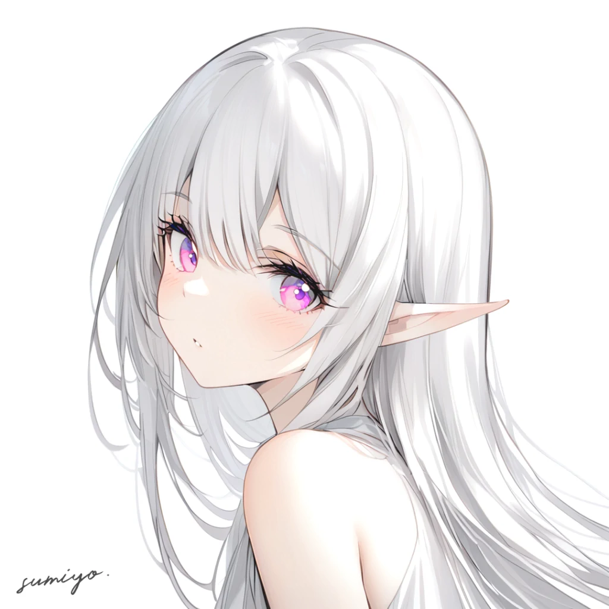

sumiyo.
—— 简单的介绍 ...我并不知道她的名字，但我想称呼她为
刚开始，她只是作为一个背景图片被添加到了网站中。但渐渐地，我明白了她在我的网站设计中所扮演的重要角色。因此，我创作了这篇关于她的文章 ...
基本信息
姓：名： 純世 「すみよ」
性别： female
种族： elf
Prompt
以下为正面提示词，不能保证语法完全正确。其他参数暂不公布。# 基础
1gril, elf, solo, 20 years old,
white, simple, simple_background, white_background,
# 外貌
white_dress, simple_dress, bare_shoulders, bare_neck, no decorations, no patterns,
elf_ears,
purple eyes, fantastic eyes, jewelry eyes, very big eyes, long eyelashes,
white_hair, long hair,
# 表情和姿态
bangs, blush, shy, cute,
standing,
looking at viewer, face, from_side, close-up, feature, portrait, upper body, full_head,
# 质量
best quality, masterpiece, very aesthetic,
最终成果
虽然经过了不断的修改，这张图片仍存在着许多瑕疵。这是最终的定稿。